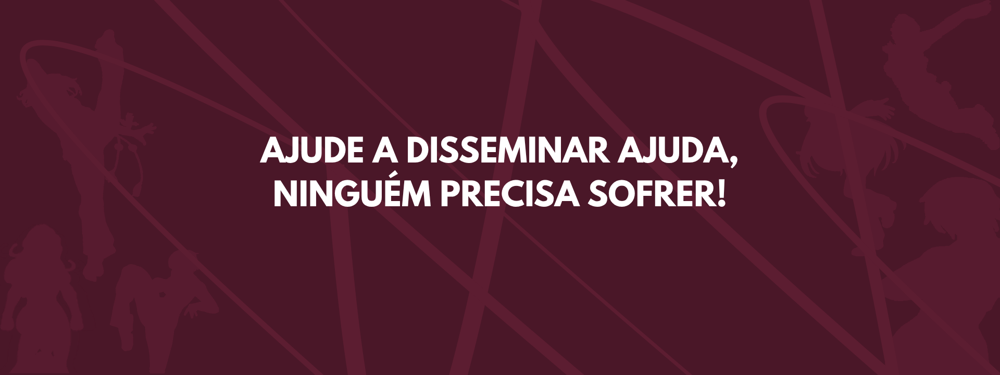

Canal voltado para denúncias de conteúdos ilegais ou abusivos encontrados na internet, como discursos de ódio, ameaças e outras formas de violência digital.
A denúncia ajuda a identificar conteúdos que podem violar direitos e contribuir para a responsibilidade dos envolvidos.
Fazer denúnciaAs Delegacias Especializadas de Atendimento à Mulher (DEAMs) são voltadas ao atendimento de mulheres vítimas de violência.
É possível registrar a ocorrência e receber orientações sobre os próximos passos e medidas de proteção.
Encontrar uma DEAMO Ligue 180 é o canal nacional de atendimento à mulher. Oferece orientação, informações sobre direitos e serviços especializados e também recebe denúncias.
O serviço pode ajudar a encontrar a rede de atendimento disponível na região.
Saiba maisCanal destinado a receber denúncias de violações de direitos humanos, incluindo situações de violência, discriminação e outras formas de abuso.
As denúncias podem ser encaminhadas aos órgãos responsáveis para investigação e providências.
Fazer denúnciaProjeto criado por uma jornalista que também foi vítima de violência online, oferecendo apoio e orientação para mulheres que enfrentam situações semelhantes.
Disponibiliza informações e suporte psicológico e jurídico para ajudar vítimas de violência no ambiente digital.
Conheça o projetoRede voluntária que conecta mulheres em situação de violência a profissionais dispostas a oferecer atendimento e orientação.
O projeto reúne terapeutas e advogadas voluntárias, facilitando o acesso a apoio psicológico e jurídico.
Encontrar apoioOrganização que oferece assessoria multidisciplinar gratuita para mulheres em situação de violência.
O atendimento busca oferecer orientação jurídica, psicológica e social, ajudando a vítima a conhecer seus direitos e possibilidades.
Saiba maisPlataforma desenvolvida com apoio do UNICEF para facilitar o acesso a informações e canais de denúncia relacionados à violência e à violação de direitos.
Pode ser utilizada para encontrar orientações e serviços de proteção disponíveis.
Conheça a plataforma